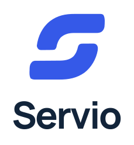
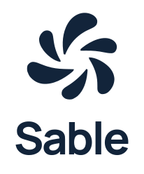

Brand Guidelines · Version 1.0 · November 2026
Service,
in flow.
Eine Plattform. Ein KI-Kollege.
Eine gemeinsame Markenfamilie.
Eine Plattform. Ein KI-Kollege.
Eine gemeinsame Markenfamilie.
Servio ist die Plattform. Sable ist der KI-Kollege darin. Die Zeichen sind eigenständig; Farbe, Schrift und Haltung verbinden sie.
Zwei versetzte Bahnen bilden ein offenes S. Sie stehen für Überblick, Übergaben und einen geordneten Servicefluss.
Primäre Produktmarke für Service Desk, Konsole, Portal, Dokumentation und Projektkommunikation.
Sechs geschwungene Segmente bilden einen offenen, lebendigen KI-Kern. Die Form bleibt auch einfarbig erkennbar.
Eigenständiges Begleiterzeichen. Bei der ersten Einführung und außerhalb des Produkts mit „by Servio“ verwenden.
Rund um das vollständige Logo mindestens ¼ der sichtbaren Symbolhöhe freihalten. Die Dateien enthalten Grundabstand; den äußeren Schutzraum im Layout ergänzen.


Identitätszeichen: 24 px. Beschriftete Inline-Funktionen: ab 14 px. Favicon: 16 px. Horizontales Logo: 140 px Breite. Im Druck: Symbol 8 mm, Logo 35 mm. Lesbarkeit im Zielmedium prüfen.
Primärversion auf hellen Flächen; inverse Version auf dunklen Flächen. Für einfarbige Produktion stehen reine Schwarz- und Weißversionen bereit. Wortmarken sind als Pfade angelegt.
Navy trägt Struktur und dunkle Flächen. Cobalt kennzeichnet Servio und primäre Aktionen. Mist gibt Ruhe. Ice ist ein zurückhaltender Akzent für Sable und sekundäre Bildflächen.
Navy auf Mist, Weiß auf Navy und Weiß auf Cobalt sind die vorgesehenen Textpaare. Ice mit dunklem Text verwenden. Statusfarben für Fehler, Warnungen und Erfolg bleiben ein eigenes System.
Digital: sRGB. Die Dateien sind RGB-Master. Für Druck Farbe mit der Druckerei auf das konkrete Papier und ICC-Profil abstimmen; keine pauschalen CMYK-Werte aus den Bildschirmfarben ableiten.
Manrope
Aa Bb 0123
Variable Originalschrift und SIL Open Font License sind enthalten. Die finalen Logo- und Banner-SVGs benötigen keine installierte Schrift.
Manrope für Wortmarken, Markenkommunikation und Überschriften. Inter für die bestehende Benutzeroberfläche. JetBrains Mono für Referenzen und Code.
Inter und JetBrains Mono bleiben Vorschläge für die vorhandene UI und werden mit diesem Kit nicht neu ausgeliefert.
Konkrete Verben, kurze Aussagen, nachvollziehbare Schritte. Sable schlägt vor; der Mensch entscheidet.
„Sable hat einen Vorschlag.“
„Prüfen und freigeben.“
Keine Allmachtsversprechen und keine menschlichen Gefühle für den KI-Kollegen behaupten.
SVG-Symbole, PNGs von 16 bis 2048 px, App-Kacheln bis 1024 px, mehrformatige Windows-ICO-Dateien, macOS-ICNS und Web-Favicons.
Transparente Symbole für freie Layouts. Flächige Kacheln für App- und Profilbilder. Runde Ecken erzeugt die Zielplattform; die Icon-Master bleiben quadratisch.
Apple Touch Icon mit 180 px, PWA-Icons mit 192 und 512 px, maskierbare Icons und je ein Manifest als Einbauvorlage.
Die maskierbare Variante hält das Symbol innerhalb der zentralen sicheren Kreisfläche. Das Manifest an die spätere Anwendung und ihre Pfade anpassen.


Gemeinsamer Banner mit 1600 × 560 px sowie je ein Servio- und Sable-Banner mit 1600 × 480 px. Alle als SVG und PNG, inklusive doppelter PNG-Auflösung.
Social-Previews mit 1200 × 630 px, GitHub-Cover mit 1280 × 640 px, Profil-Icons, Wiederholmuster und 16:9-Hintergründe in Full HD und 4K. Helle und dunkle Ausgaben sind enthalten.
Die Web-App nutzt Relay und Nova Flow in Login, Navigation, Portal und KI-Oberflächen. Manrope ist lokal als Display-Schrift eingebunden; Inter bleibt die UI-Schrift. Auf dunklen Flächen sorgt eine hellere Cobalt-Variante für lesbare Bedienelemente. Der Sable-Launcher trägt den zweifarbigen Akzent.
primary = für helle Flächen
inverse = für dunkle Flächen
black / white = reine Einfarbversionen
endorsed = Sable mit „by Servio“
-2400w = PNG mit 2400 px Breite
Manrope: Google Fonts / Manrope Project Authors, SIL OFL 1.1. Fontdatei und Lizenz liegen im Ordner fonts. Für das Projekt gilt die Lizenz im Repository. Die gewählten Relay- und Nova-Flow-Referenzen bleiben unter source/references erhalten.